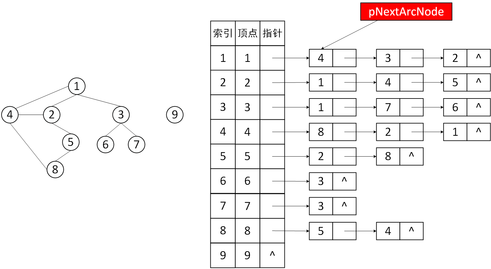
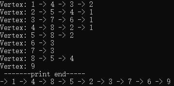

1.前言
图搜索的执行过程。图DFS或者BFS代码层面，没有深入的理解DFS和BFS的执行过程。很多问题就是DFS和BFS的执行过程的改进。
BFS只能出现在一种场景：出现关键词“最短”，例如：求最短的路径，最短的K条路径。
其余情况都用DFS设计算法解决问题。求路径问题，没有要求最短，只要求你将路径求出来，或者求K条的路径。
DFS执行过程，很多题都是由改进DFS的执行过程，就是根据题目设计图的DFS算法去解决。Visit[]标记数组。
2.深入理解DFS
2.1 算法思想
- 从一个没有访问过的顶点Vi开始进行深度优先遍历（DFS[Vi]），对Vi进行标记（防止重复问题）。
- 再从Vi的一个未访问的邻居结点Wi进行深度优先遍历（递归调用DFS[Wi]）；
- 等Wi的DFS执行完后，仍存在Vi的另外未访问的邻居结点Wj，则从Wj再开始深度优先遍历（DFS[Wj]）；
- 不断重复取Vi的未访问邻居结点W，从W开始DFS直到不存在为访问的邻居结点。
- 如果从Vi开始执行完图的深度优先遍历DFS之后，还存在没有访问过的结点，那么取一个未访问的结点出发,再次进行DFS。
- 这样重复的从未访问结点开始出发进行DFS，直到图中所有的顶点都被搜索(标记)。
2.2 代码
标记数组
用来标记顶点是否被访问过
bool visited[MAX_VERTEX] = { false };
访问顶点
访问顶点信息，此处只是简单的打印，不做任何处理
void visitVertex(VertexType vertex) { printf("-> %d ", vertex); }
从顶点V出发，深度优先遍历
从图中一个结点出发，深度优先遍历
注意：图中
vertices[MAX_VERTEX]数组中，顶点的编号和索引值一样，即vertices[0]中不存任何信息，舍弃；vertices[1]对应顶点1 ...// 从顶点v出发，深度优先遍历 void DFS(ALGraph alG, VertexType vertex) { // 访问vertex顶点信息 visitVertex(vertex); // 访问标记 visited[vertex] = true; // 如何去找一个未访问的结点？穷举法，一个一个找 // 获得头结点地址 ArcNode* pNextArcNode = alG.vertices[vertex].first; int neighborVertex = 0; while (pNextArcNode != NULL) // 重复取邻居结点，其存在弧结点 { // 读出vertex的邻居结点 neighborVertex = pNextArcNode->adjvex; if (!visited[neighborVertex]) // 邻居结点未被访问过 { // 从Wi开始DFS DFS(alG, neighborVertex); } pNextArcNode = pNextArcNode->next; // 取下一个弧结点 } }
遍历图
遍历整个图
// DFS遍历图 void DFSTraverse(ALGraph alG) { // 初始标记数组 for (int v = 1; v <= alG.vexnum; v++) { visited[v] = false; } // 从0开始深度优先遍历 for (int v = 1; v <= alG.vexnum; v++) { if (!visited[v]) DFS(alG, v); } }
2.3 测试运行
测试图结构如下所示

数据准备
顶点数据：
vSet.txt1 2 3 4 5 6 7 8 9
弧数据：
arcSet.txt1 2 1 3 1 4 2 4 2 5 3 6 3 7 4 8 5 8
读取顶点信息
读取弧信息
创建图
调用DFS
DFSTraverse(alG); printf("\n");
运行结果

2.4 总结
- 从顶点Vi开始出发，只要顶点Wi存在与Vi的路径，则Wi一定会被访问到；
- 访问一个顶点之后务必进行标记，防止结点的重复访问；
时间复杂度：
- 基于邻接表存储的图DFS时间复杂度为：O(n+e)
- 基于邻接矩阵存储的图DFS时间复杂度为：O(n^2)
3.BFS
3.1 算法思想
3.2 代码
void BFS(ALGraph* ALG, VertexType v) { // 初始化队列 Queue Q; initQueue(Q); visited[v0] = true; enQueue(Q, v0); while (!emptyQueue(Q)) { QueueElemType elem; deQueue(Q, elem); printf("->%d", elem); ArcNode* pArcNode = ALG->vertices[elem].firstArc; while (pArcNode != NULL) { if (visited[pArcNode->adjvex] == false) { visited[pArcNode->adjvex] = true; enQueue(Q, pArcNode->adjvex); } pArcNode = pArcNode->next; } } }
// BFS遍历图 void BFSTraverse(ALGraph* ALG) { // 初始标记数组 for (int v = 1; v <= ALG->vexNum; v++) { visited[v] = false; } // 从0开始深度优先遍历 for (int v = 1; v <= ALG->vexNum; v++) { if (!visited[v]) BFS(ALG, v); } }